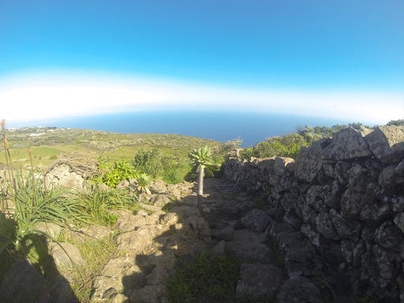
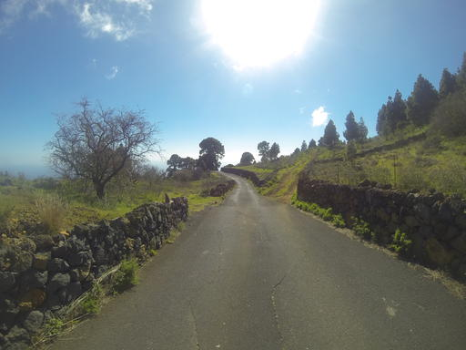
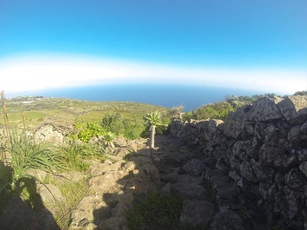
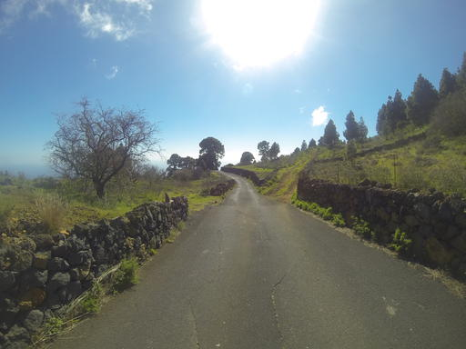
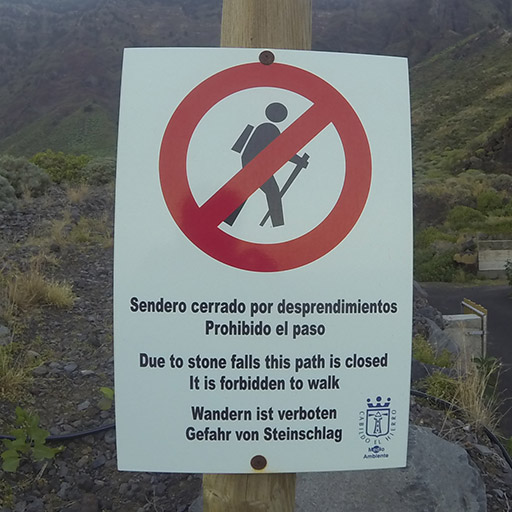

Jour 3. 26 janvier Prendre des risques Risco de los Herreños / Las Playas → Isora
La montée se casse subitement et devient plus douce, la pente aride fait place à une version canarienne du jardin d’Eden, faite de petits murs de pierre basaltique, d’un tapis de verdure luxuriant, de pins, d’amandiers en fleurs.

Le tout baigné d’un soleil froid et d'une quiétude apaisante.


 



Le jour commence à faiblir sur le plateau, quand j’arrive au début du sentier censé me permettre de redescendre dans le Golfe pour rejoindre mon véhicule.

Sentier fermé pour cause d’éboulis.
Après une petite sueur froide, je contemple mes options :
1. tenter de passer quand même : les éboulis seront moins un problème que de rester sur le sentier et je risque de finir en roulant;
2. retour par où je suis arrivé : pas très motivant, dangereux en descente et à la tombée de la nuit;
3. faire un grand détour par un autre sentier et un très long bout de route. Dont un passage dans un tunnel interdit au piétons;
4. me préparer un petit nid dans les cactus et attendre le lendemain.
Dans la précipitation, l’option 3, le grand détour, semble viable. Je pars donc en flèche avec l’espoir d’arriver avant la nuit.